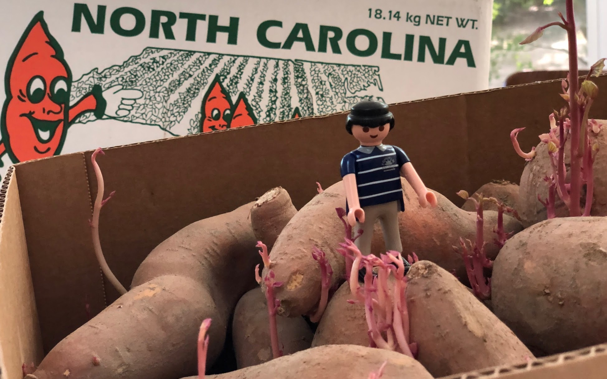

My dissertation, The Dynamics of Perennial Crop Production and Processing, focused on the economics of perennial crop production, with applications to Brazilian sugarcane and the expansion of the Brazilian biofuel industry.
(with Alice Kilduff)
Abstract: Willingness-to-pay (WTP) estimates help agribusinesses estimate whether a new product is likely to be profitable. For produce, new products, such as new fruit varieties, need to be adopted by producers before they can be sold to consumers. The study of ex ante fruit and vegetable producer preferences is relatively new. This study uses meta-regression analysis to compare the estimated WTP premium between U.S. producers and consumers to determine whether they differ. After controlling for differences in study methods, product attributes, and potential publication bias, the producer WTP was between 14.16 and 27.73 percentage points higher. Subject to several caveats and limitations, this suggests that consumer WTP can be a sufficient metric for the profitability of new produce products.
(with Kevi Mace, Jessica Rudder, Rachael Goodhue, Tor Tolhurst, Hanlin Wei, Elizabeth Grafton-Cardwell, Ian Grettnberger, Houston Wilson, Robert Van Steenwyk, Frank Zalom, and John Steggall)
Abstract: Neonicotinoid insecticides are widely used in agriculture, including in many California specialty crops. With mounting evidence that these insecticides are harmful to bees, state and national governments have increasingly regulated their use. The European Union, Canada, and United States have imposed use restrictions on several neonicotinoids, such as on the timing of applications. In 2020, California proposed a draft regulation to mitigate harm to managed pollinators from four nitroguanidine-substituted neonicotinoids (NGNs): clothianidin, dinotefuran, imidacloprid, and thiamethoxam. We use data on California pesticide use from 2015 to 2017 to analyze the economic and pest management implications of the 2020 draft proposed regulation for seven crops: almond, cherry, citrus, cotton, grape, strawberry, and tomato. From 2015 to 2017, these crops accounted for approximately 85% of total hectares treated with NGNs and 87% of NGN use by kilograms of active ingredient applied in treatments that would have been affected by the proposed regulation. These insecticides often primarily target Hemipteran insect pests. In most cases there are alternatives; however, these are often more expensive per hectare and do not have the same residual effectiveness as the NGNs, which are systemic insecticides. Overall, we estimate that pest management costs for these crops would have increased an estimated $13.6 million in 2015, $12.8 million in 2016, and $11.1 million in 2017 if the 2020 draft proposed regulation had been in effect, representing a 61% to 72% increase in the cost of managing the target pests.
(with Leo Simon)
Abstract: A fundamental issue in perennial crop economics is finding the optimal time to replace trees in an orchard. Orchards have two key characteristics: they consist of trees of multiple vintages, and the trees have a non-monotonic yield curve. We present the first analysis of optimal tree replacement in an orchard that has both characteristics. Our results show that cyclical production is optimal in the long-run, and that optimally managed orchards converge uniformly to the long-run cycle. Our results have implications for orchard valuation, orchard planting, and orchard conversion. We are also the first to provide comparative statics on the long-run cycle radius.
(with David Zilberman)
Abstract: We develop and analyze an unexplored mechanism to reduce biorefinery supply chain costs when the feedstock is a perennial crop: adjusting the age-structure, and hence yield, of the perennial feedstock. The non-monotonicity of the age-yield function introduces a non-convexity to the cost-minimization problem. We show that, despite this, the problem has a solution and present analytic and numeric comparative statics, finding that smaller refineries are most likely to benefit from optimizing age-structure. The model is calibrated to the sugarcane ethanol industry in the South-Central region of Brazil and shows that the cost-reductions from optimizing age, compared to maximum sustainable yield, are on the order of one percent. Generally, the magnitude of the cost reduction will depend on the life-cycle of the crop, the costs of growing and transporting the feedstock, and the size of the biorefinery.
